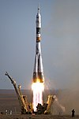

rocket

Definition: A rocket (from Italian: rocchetto, lit. 'bobbin/spool') is a vehicle that uses jet propulsion to accelerate without using the surrounding air. A rocket engine produces thrust by reaction to exhaust expelled at high speed. Rocket engines work entirely from propellant carried within the vehicle; therefore a rocket can fly in the vacuum of space. Rockets work more efficiently in a vacuum and incur a loss of thrust due to the opposing pressure of the atmosphere.
Source: Wikipedia
Wikipedia Page
Wikidata Page
Occurs in: